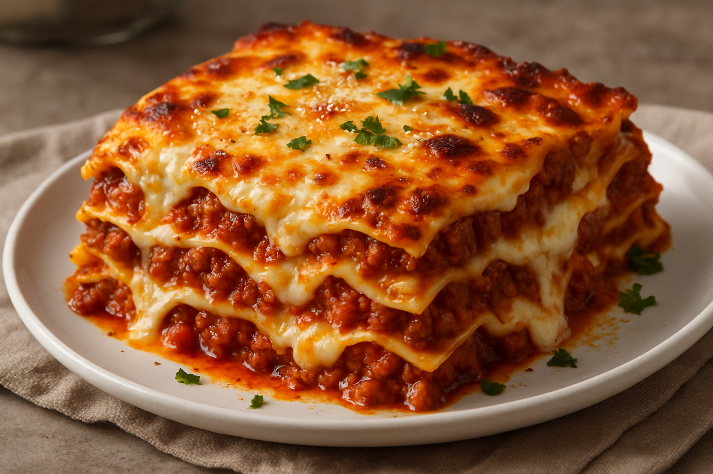

Description
Lasagna is a hearty, layered Italian dish made with wide, flat pasta sheets stacked between rich meat or vegetable sauces, creamy bechamel, and melted cheeses like mozzarella and Parmesan. Baked until golden and bubbling, it offers a comforting blend of savory flavors and textures, with each slice revealing tender pasta, flavorfli fillings, and gooey cheese.
Ingredients
- Lasagna noodles (regliar or no-boil)
- Ground beef or Italian sausage (or a mix)
- Onion (diced)
- Garlic (minced)
- Marinara sauce or tomato sauce
- Ricotta cheese
- Mozzarella cheese (shredded)
- Parmesan cheese (grated)
- Egg (to mix into the ricotta for structure)
- Olive oil (for sautéing)
- Salt and pepper
- Italian seasoning (optional: basil, oregano, thyme)